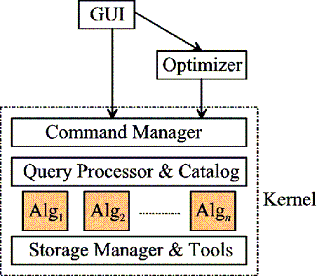
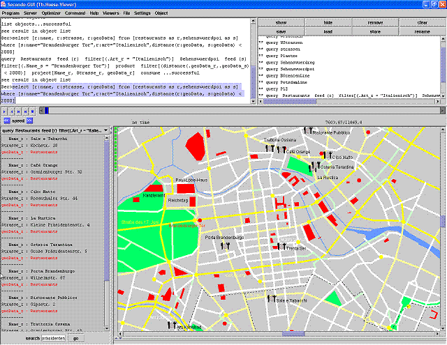

| |
 |
An Extensible Database System |
What is Secondo
Secondo is an extensible database system supporting
especially non-standard applications. Designed at the FernUniversität in Hagen,
Secondo is a platform for implementing and experimenting
with various kinds of data models.
Target Groups
Secondo can be used by groups at universities to pursue
and prototype their research ideas for database systems. It can be used in teaching
to show students in detail the architecture and implementation of database systems.
Additionally, Secondo may be interesting for users in need
of a database system able to handle non-standard data types usually not supported
by standard systems.
Benefits
The Secondo system is extensible by algebra modules, using
a well defined interface. New data models and data structures together with their operations
are integrated into the system in this way. The source code is available and enables the
user to access and modify every part of the database system. Secondo
comes with a carefully written user manual, programmer's guide and installation instructions.
Functionality

Objects of an arbitrary type defined in one of the
Secondo algebra modules can be stored in a database.
The following list shows some of the available
algebras:
- Standard-Algebra
provides simple types like integer, real, bool and
string and operations on those types.
- Relational-Algebra
contains data types and operations to realize a
classical relational database system.
- Spatial-Algebra
represents geometrical objects such as points,
lines and regions together with spatial operations.
- Temporal-Algebra
represents moving objects in databases, e.g.
peoples or vehicles and allows one to formulate
queries about their movements.
Query Example
Using these algebras, one can determine the names
and addresses of all Italian restaurants in Berlin, which
have a distance smaller than 2 km to the Brandenburg
Gate. Then, the result is presented graphically.
select [r:name, r:strasse, r:geoData]
from [restaurants as r, sehenswuerdpoi as s]
where [ s:name="Brandenburger Tor",
r:art="Italienisch",
distance(r:geoData, s:geodata) < 2000]
